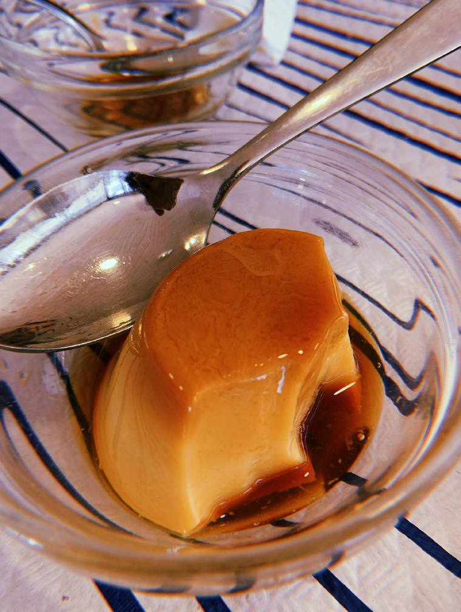

Desserts

Desserts
Flan de huevo
La crème caramel espagnole
Préparation : 20 min
Repos : 3 h
Cuisson : 40 min
Ingrédients (pour 4 personnes)
- 4 œufs
- 200 g de sucre
- 50 cl de lait
- vanille ou zeste de citron
- quelques gouttes de citron
Quantités adaptées. Les temps de cuisson ne sont pas recalculés.
- Dans le moule, faire un caramel avec 50 g de sucre et le citron, napper, laisser refroidir.
- Bouillir le lait avec la vanille.
- Fouetter les œufs et le reste du sucre, verser le lait chaud peu à peu.
- Verser dans le moule, cuire au bain-marie au four à 170 °C, 35 à 40 minutes : une lame ressort propre.
- Réfrigérer au moins 3 heures, puis démouler.
D’après Spain.info, office espagnol du tourisme. Traduit et reformulé, four et repos précisés.